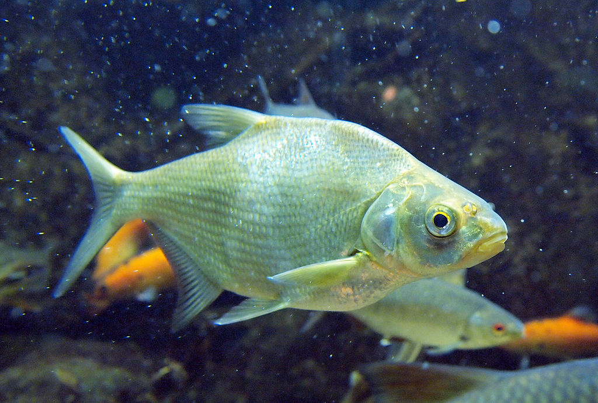
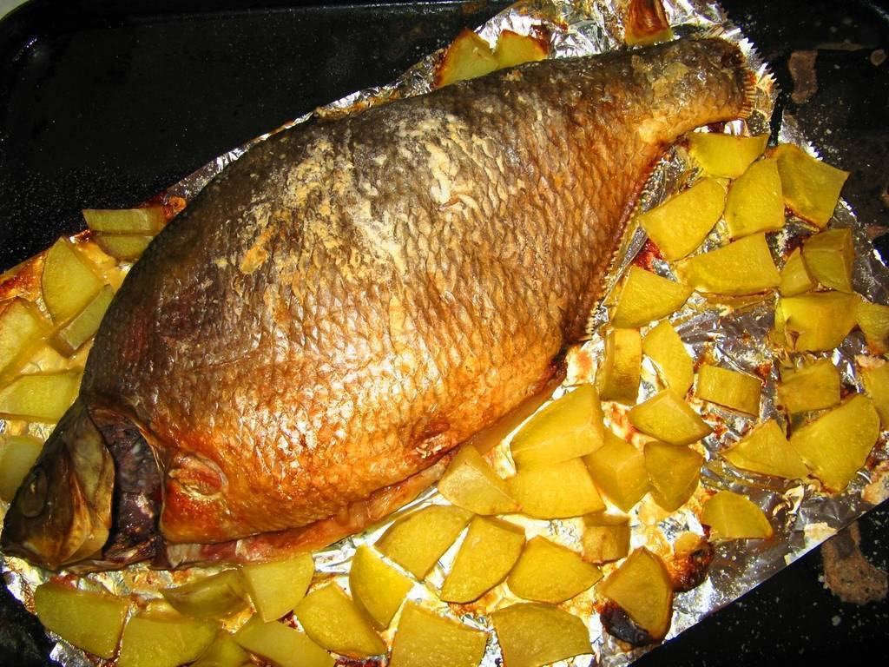
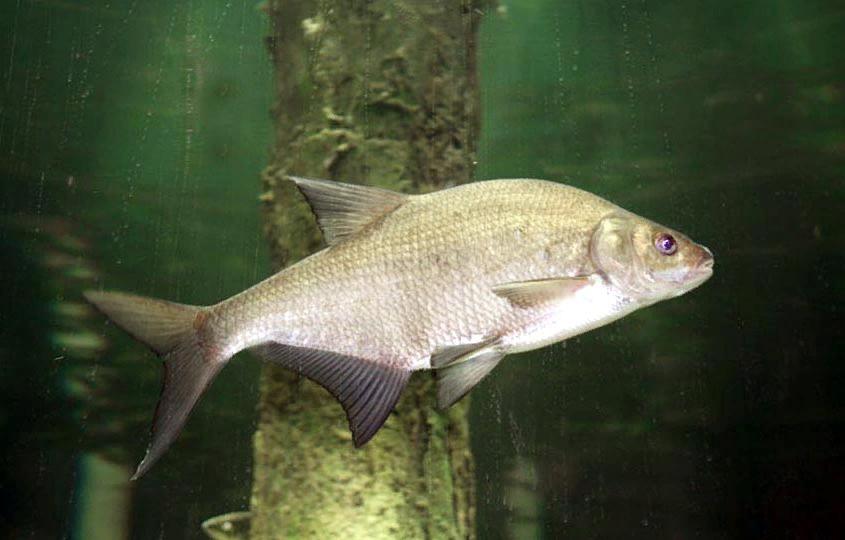

Бесплатные лещи(не кидалово)
Тело высокое, максимальная высота составляет около трети длины тела. Голова и рот маленькие. Рот заканчивается трубкой, которая может выдвигаться. Спинной плавник высокий и короткий с тремя жёсткими неветвистыми и 8—10 мягкими ветвистыми лучами. Анальный плавник длинный с тремя жёсткими и 22—29 мягкими лучами, начинается за задним краем основания спинного плавника. Между брюшными плавниками и анальным есть не покрытый чешуёй киль. Глоточные зубы однорядные, по пять с каждой стороны. У взрослого леща спина серая или коричневая, бока золотисто-коричневые, брюхо желтоватое, все плавники серые часто с тёмными краями. У молодых особей окраска серебристая. Максимальная длина тела — 82 см, масса — 6 кг, максимальная продолжительность жизни — 23 года
Половой зрелости лещ достигает в возрасте от 3 до 4 лет. Нерест происходит всегда на травянистых отмелях, в неглубоких заливах, и совершается с громким плеском. У самца в это время на теле образуются многочисленные мелкие тупоконические бугорки, сначала белого, потом янтарно-жёлтого цвета. Время нереста в средней и северной России не ранее первых чисел мая, на юге с середины апреля. Ход леща в Волгу со взморья начинается ещё в феврале под льдом, а валовой ход бывает около середины апреля. Плодовитость от 92 до 338 тысяч икринок. Оптимальная для нереста температура — около 21 °С[5]. В период нереста самцы образуют территории, на которых самки мечут икру. Мальки вылупляются по истечении от 3 до 12 дней и прикрепляются к водяной растительности специальным секретом. Они остаются прикреплёнными до полного использования желтка.Лещ водится в Центральной и Северной Европе в бассейнах Северного, Балтийского, Каспийского, Чёрного и Азовского морей), акклиматизирован в Сибири в бассейнах рек Обь, Иртыш и Енисей. В 1930-х годах интродуцирован в Зауральские озёра[6]. Есть в Аральском море, в озере Балхаш и низовье Сырдарьи. На Крайнем Севере и на юге территории бывшего СССР его нет. В Северной Двине он немногочислен и, вероятно, проник сюда по каналам из Волжской системы. В Закавказье встречается лишь в немногих местах (у Ленкорани и в озере Палеостоми, а также в Мингечаурском водохранилище). Обитает в озёрах, прудах, реках, водохранилищах и солоноватых водах Каспийского, Аральского и Азовского морей.
